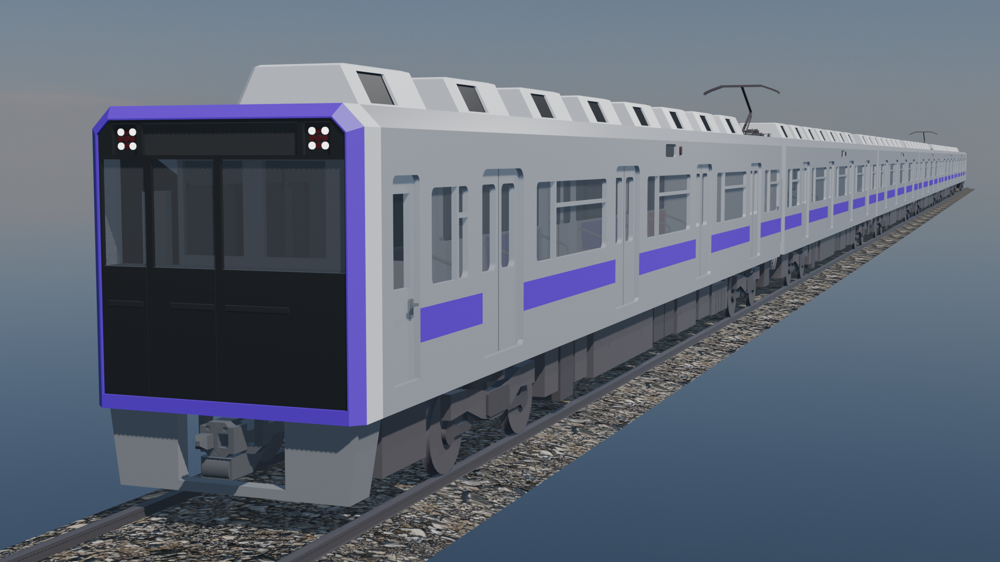
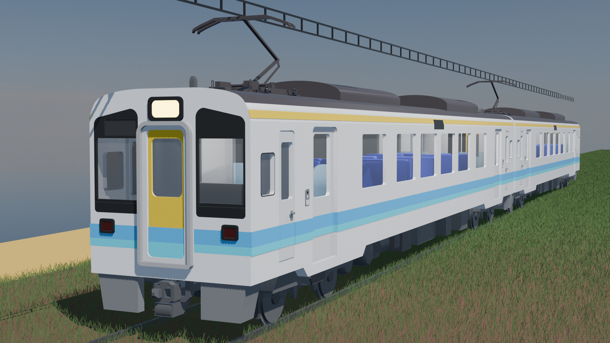
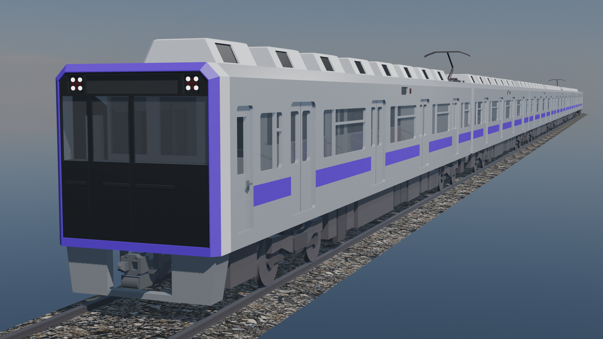
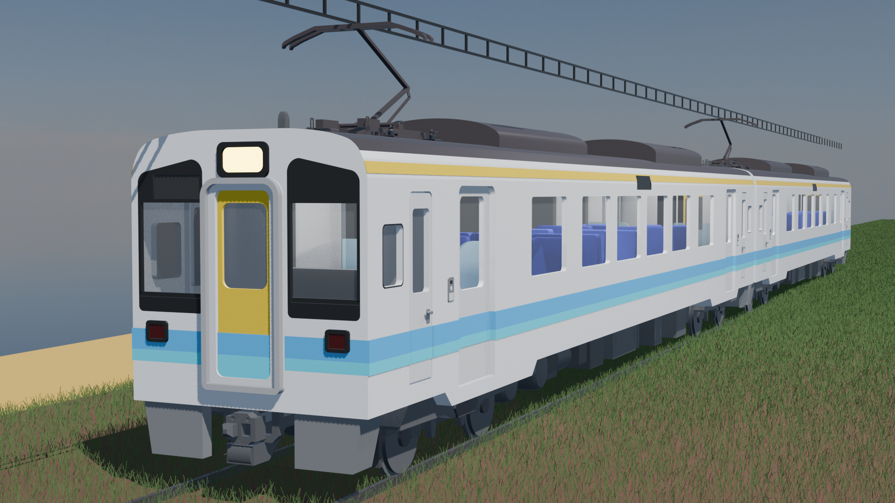
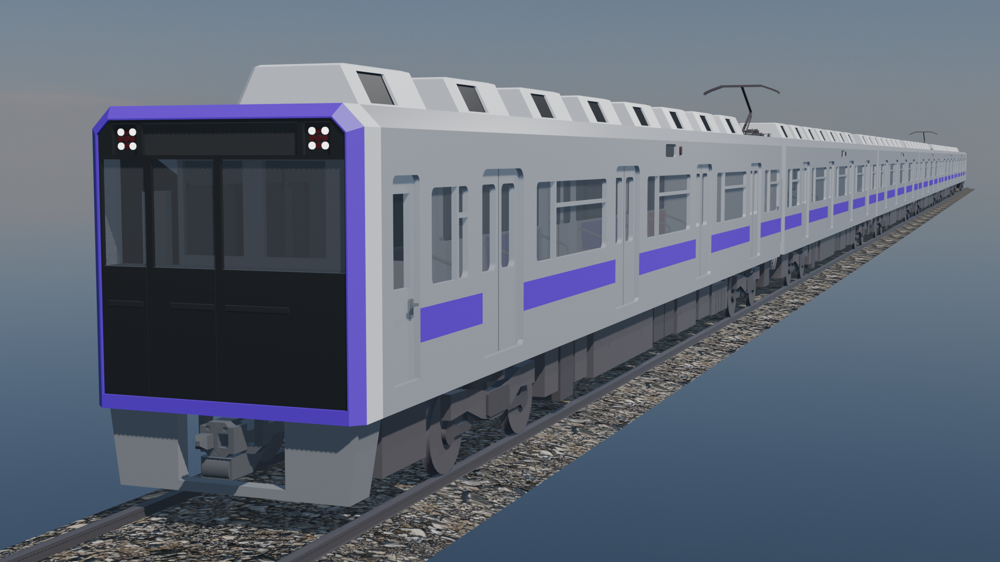
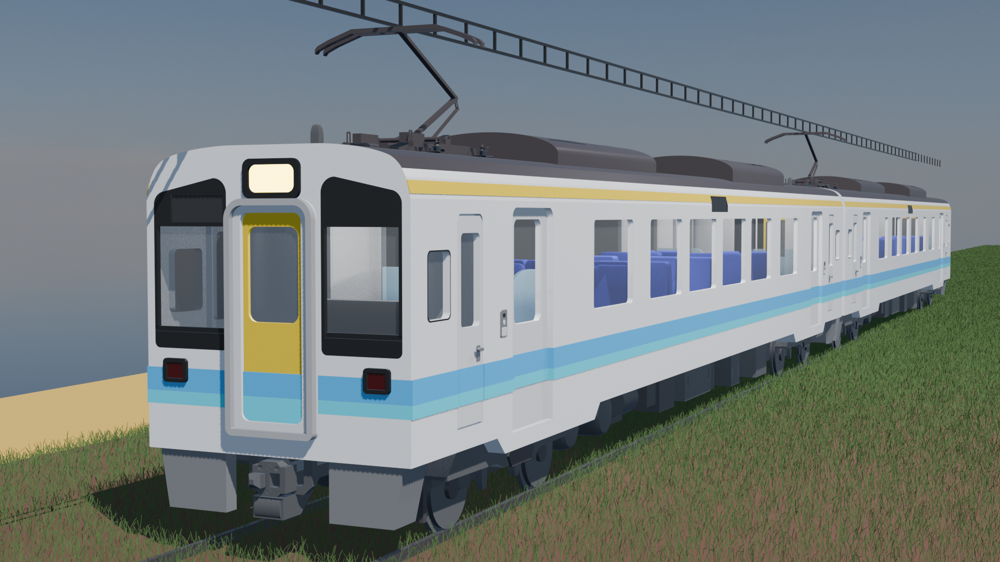

鉄道関連の3Dモデルは
こちらから配布中！
 



現在、制作中の3DモデルをGoogle driveを介して配布しております。完成次第随時更新する予定です。使用上の注意はフォルダ内のtxt/mdファイルに記載しております。ご一読ください。
配布ページにアクセス作った架空鉄道を紹介します。


現在、制作中の3DモデルをGoogle driveを介して配布しております。完成次第随時更新する予定です。使用上の注意はフォルダ内のtxt/mdファイルに記載しております。ご一読ください。
配布ページにアクセス